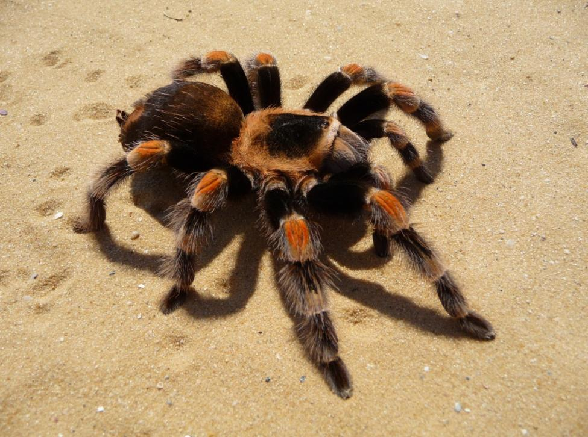
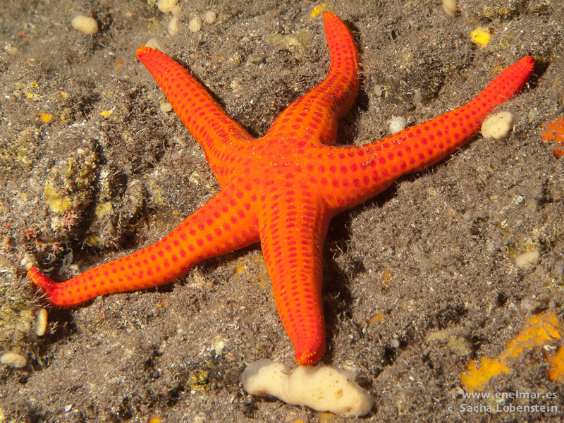
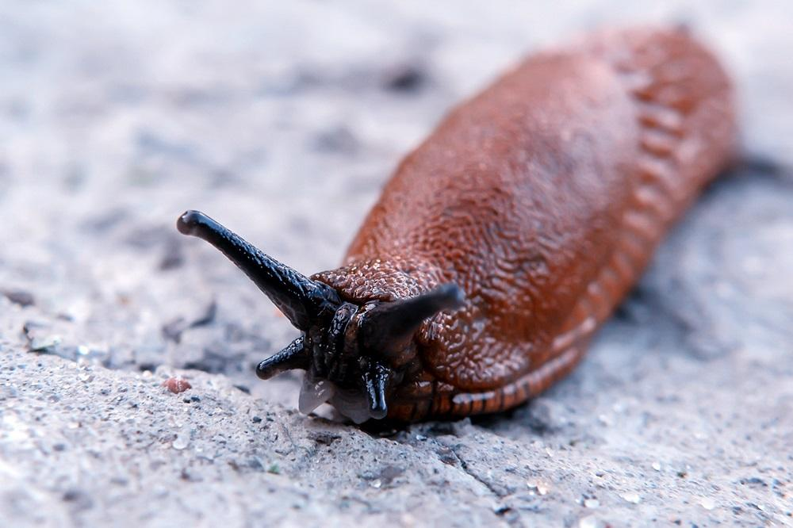
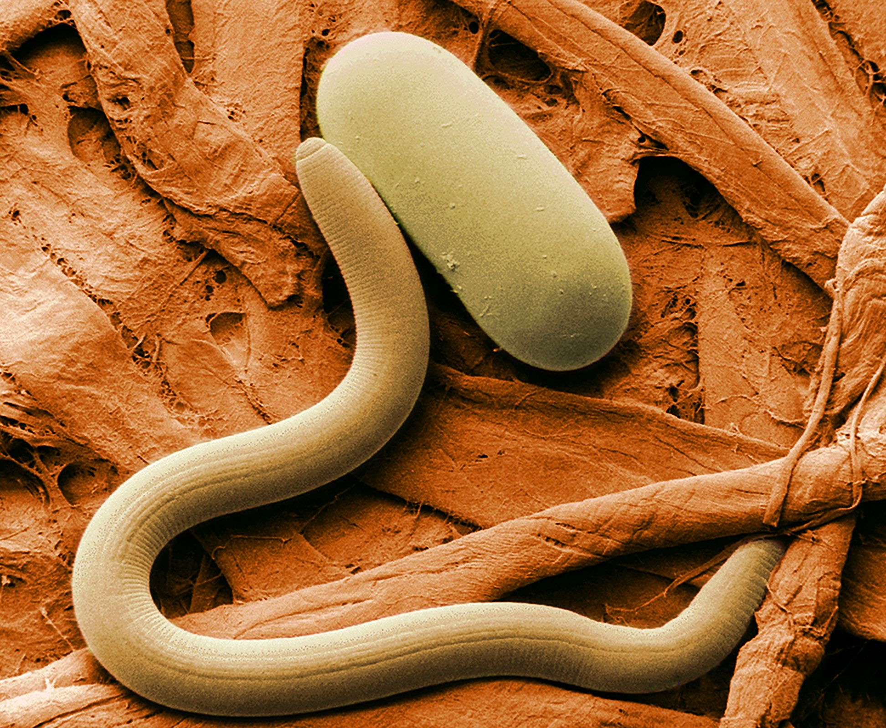

1. Atrópodos
2. Equinodermos
3. Moluscos
4. Esponjas
5. Nematodos
Exoesqueleto de quitina y patas articuladas
Simetría pentarradiada, esquileto externo de piezas calcáreas.
Triblástidos de simetría bilateral no segmentados
Carecen de boca e intestinos. Sus cuerpos se organizan alrededor de un sistema de canales de agua.

Filiformes con cuerpo sin segmentos y cubiertos de una cutícula hiliana.
